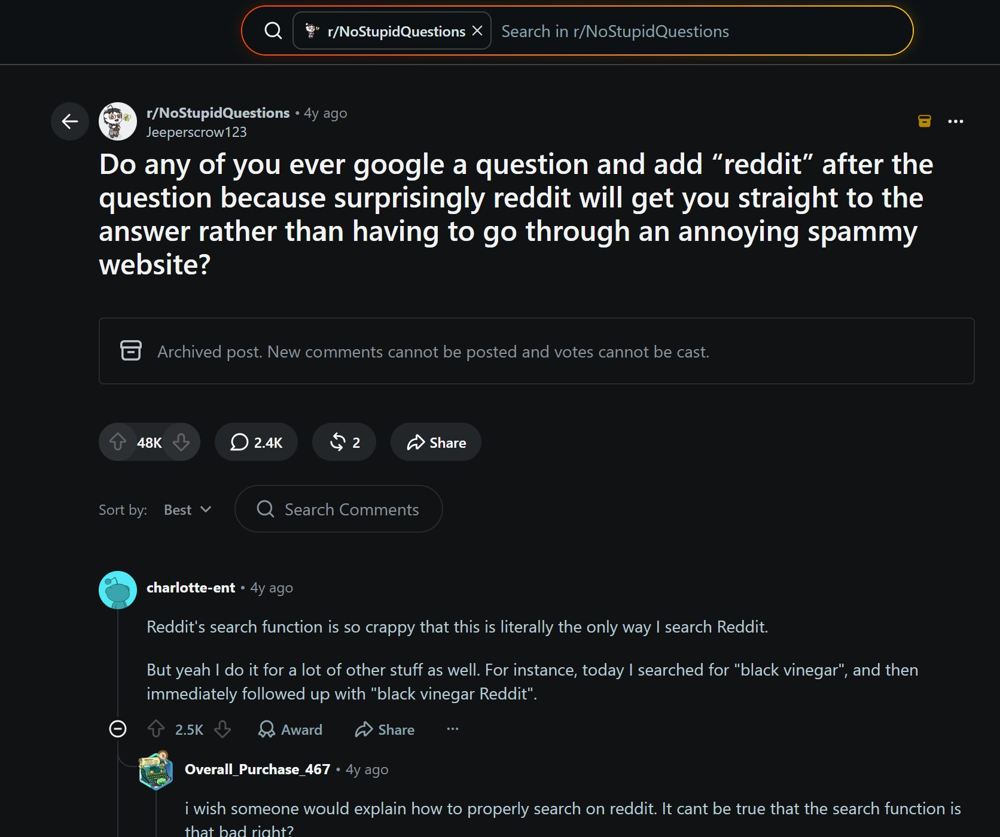

Reddit is a waypoint, not a destination
Product case studyReddit’s fastest-growing entry point isn’t Reddit. It’s a Google result that happens to be hosted there.

Reddit users navigate Reddit by leaving Reddit
Search a bug, a product, a symptom, and you'll append one word to get a straight answer: reddit. You're not alone. An entire 48K-upvote thread exists of people describing the habit, unprompted, because Reddit's own search is worse than routing through Google to reach it.
That behaviour has a name I'd give it: Reddit is a waypoint, not a destination. A waypoint is somewhere you pass through on the way to somewhere else. The data agrees: 62% of desktop visits land on one thread from search, get the answer, and bounce. People treat it as a reference page they consult and then close.
Method, briefly
Everything here is outside-in: Similarweb traffic data, a live r/NoStupidQuestions thread as qualitative signal, and public benchmarks, labelled as such and never as Reddit-specific numbers. The deck at the bottom of this page carries the full slide-by-slide analysis: segmentation, prioritisation, wireframe notes, sources.
The surface everyone ignores
Reddit's onboarding assumes you arrived at the homepage and chose to be there. Almost nobody does. The highest-volume visitor lands mid-conversation on a thread page, sees a wall of comments and a login nag, and has no reason to stay. The most valuable surface in the product is the one no one designed for acquisition.
The leak: one journey, three break points
Follow a would-be member from search to churn:
- Arrival. Lands on a thread from Google. Gets the answer. Sees no reason to join. Leaves.
- First participation. The rare user who tries to post trips Automod, whose new-account rules delete it silently. First contribution, gone. Motivation dies here.
- Recovery. No soft landing after the deletion. No “here's what happened, here's where this belongs.” The user reads it as rejection and churns.
Three separate failures, one strategy failing at each stage.
The fixes, mapped to each break point
Three fixes, in priority order, each answering one leak:
- Context-aware thread-page onboarding (primary → Arrival). A slim, non-modal strip at the top of the thread: community identity, honest social proof, one non-coercive call to action. Onboarding that lives on the thread page, because that is where the user already is.
- Composer coach (secondary → First participation). Catch the doomed first post before Automod does. Baseline is a non-LLM rules linter. An LLM tone check is added only where it earns its ~$0.001-per-check cost. Framed as help, opt-out, new accounts only.
- Megathread fallback routing (tertiary → Recovery). When the coach sees a post that will fail, it offers a soft pivot to the subreddit's megathread instead of a silent deletion. Somewhere to land. It sits inside the coach flow, so it never becomes a standalone “kids table.”
Cut deliberately: progressive login blurs, which risk cloaking penalties against the exact SEO traffic keeping the lights on and have drawn documented user backlash, and anonymous carts, which were underdeveloped.
How you'd know it worked
North Star: new-user activation rate, the share completing one meaningful action (upvote, follow, comment) within 48 hours of signup. Signups and DAU both miss it. This is the action that predicts they'll come back.
The guardrail that leads: Google referral traffic must not decline faster than the −14% year-on-year baseline, and thread indexability stays at 100%. Every fix here touches the arrival surface, which means every fix can threaten the 62% the business is built on. That guardrail is the first thing I'd watch, and the line I wouldn't cross to hit the North Star.
The horizon
AI assistants increasingly answer the question a Reddit thread used to. Today that traffic is under 0.1% of inbound, but it's the only source growing while Google organic drops double digits. This case study fixes the arrival surface. Whether Reddit can become somewhere worth arriving at is the larger open question.
The full deck
Eleven slides: segmentation, prioritisation, wireframe notes and sources. This page is the argument; the deck is the working.
Frame not loading? Open the deck in a new tab ↗